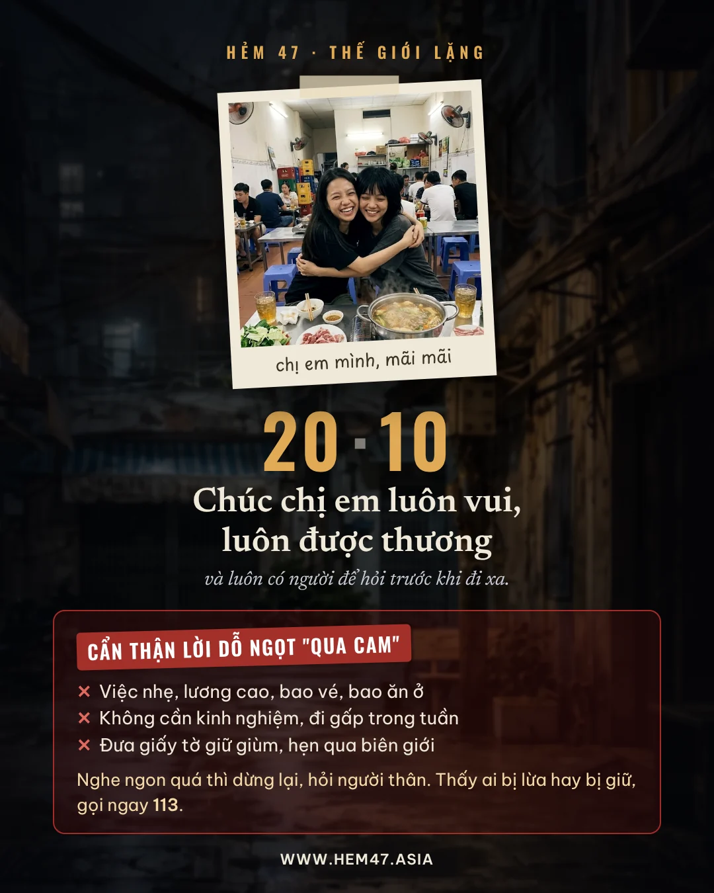

Đăng nhập để lưu tiến trình lên tài khoản. Đổi điện thoại hay máy khác, đăng nhập cùng tài khoản là chơi tiếp được. Đang chơi dở trên máy này thì đăng nhập ở đây trước để đưa bài lưu lên.
Một năm trước, Lâm viết một bài bóc phốt sai. Cô gái tên Ngân mất hết rồi biến mất. Giờ Lâm dọn về đúng con hẻm mẹ cô bán tạp hóa, mở dịch vụ xác minh để có tiền đóng trọ.
Đang tải tranh…
Vào nhóm Cư dân Hẻm 47| Mã | Cảnh | Ai nói | Kiểu | Lời | Hiện khi | Sau đó | Ghi chú |
|---|

Hẻm 47 · Thế Giới Lặng
Từ nay game chỉ chạy ở địa chỉ www.hem47.asia. Link cũ the-gioi-lang-v6.vercel.app sắp ngưng, bạn lưu lại link mới nha.
✓ Tiến trình chơi từ link cũ đã được chuyển sang đây.
Tin cập nhật, hậu trường và chỗ góp ý của Hẻm 47 nằm ở mấy kênh dưới đây.